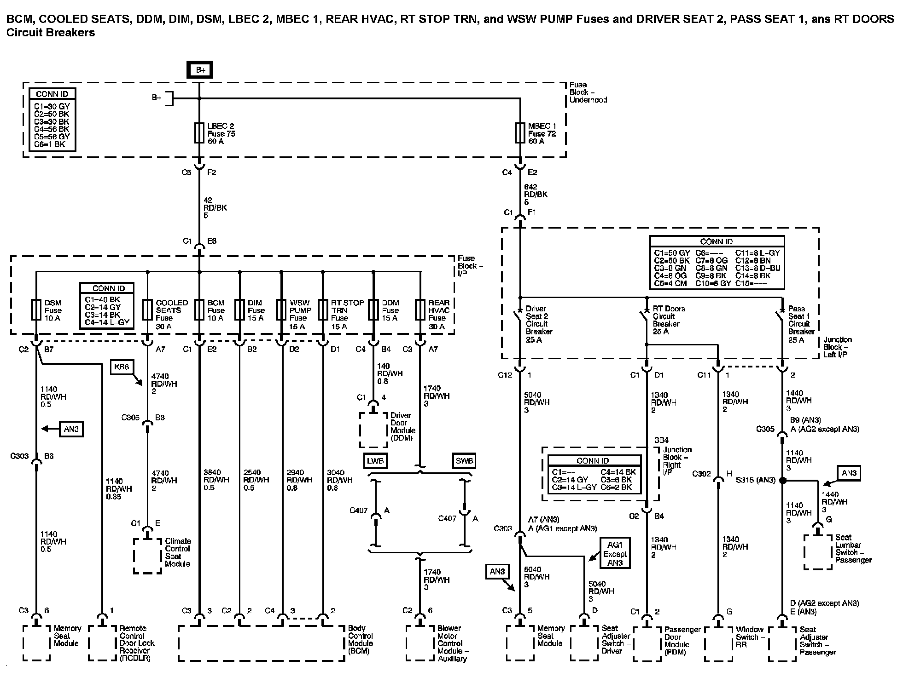

Power Distribution Diagram 5
Power Distribution Diagram 5:

Next Diagram: Power Distribution Diagram 6
Previous Diagram: Power Distribution Diagram 4
Locations: The locations for the Connectors, Grounds, Splices, and Grommets shown within these diagrams can be found via their numbers at Vehicle Locations Locations